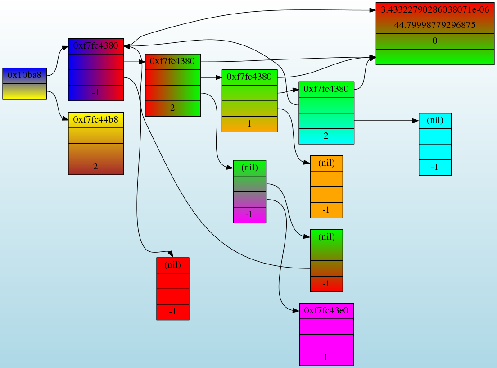

<table>
<tr>
<th>
<FONT SIZE=+1 COLOR="#FF0000">
Data Structure Gradients
</FONT>
</th>
</tr>

<tr>
<td  align=LEFT colspan=2>
<BLOCKQUOTE>
Demonstrates an application of gradients to record nodes.</BLOCKQUOTE>
<P>
</td>
</tr>
<tr>

<td>
	<A HREF="datastruct.gv.txt">
	
	</A><BR>
	<I>Click on the picture to view the .gv file</I>
</td>
</tr>
</table>
